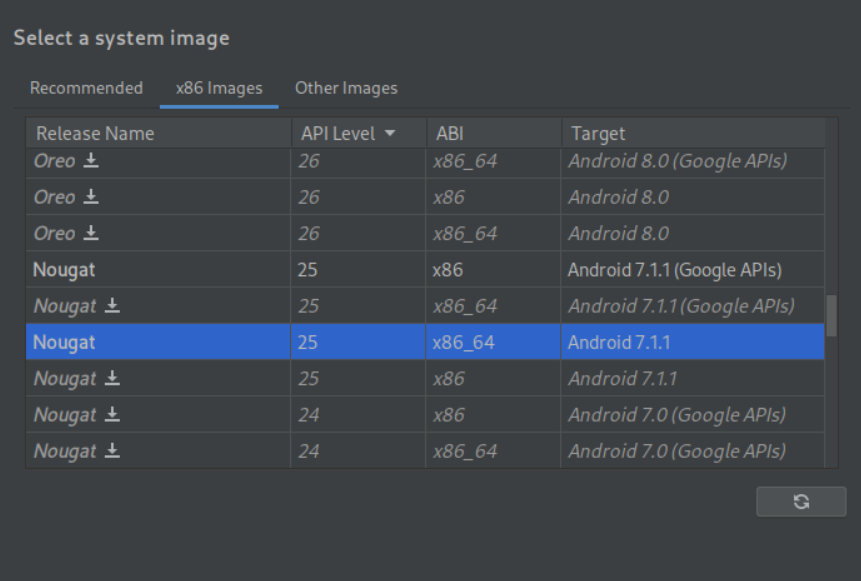

## *Read and Manipulate Network Traffic on Android with mitmproxy* ##### By Ratzo (CCCamp 2023) <small> (Made with reveal.js / MIT License) </small> <small> Slides on https://therealgarlic.github.io/mitmproxy-presentation/ </small> <a rel="license" href="http://creativecommons.org/licenses/by/4.0/"><img alt="Creative Commons License" style="border-width:0" src="https://i.creativecommons.org/l/by/4.0/88x31.png" /></a><br /> --- ### Table of Contents 1. What is mitmproxy? 2. Read Traffic 3. Set Up with Android 4. Manipulate Traffic Note: Goal - Spark interest in that topic of Network Traffic Interception + First steps into setting up mitmproxy --- ### What is mitmproxy? * "A free and open source interactive HTTPS proxy" (MIT License) * Created by [Aldo Cortesi, Maximilian Hils and Thomas Kriechbaumer, et al. in 2010](https://mitmproxy.org/publications/) * Scope of this talk is mitmproxy and Android * Motivation for me: C3-Talks by Christopher Weatherhead et al. ([1](https://media.ccc.de/v/35c3-9941-how_facebook_tracks_you_on_android#t=375), [2](https://media.ccc.de/v/36c3-10693-no_body_s_business_but_mine_a_dive_into_menstruation_apps#t=770A)) Note: * Burp Suite, Charles, Wireshark --- ## Read Traffic - Intro * Open mitmproxy with `mitmproxy` * Show more details by pressing ENTER * Quit details or mitmproxy with `q` <video width="320" height="240" controls src="videos/WiSee.webm"/> --- ## Read Traffic - cURL * Export requests by pressing `e` and providing an output filename <video width="320" height="240" controls src="videos/WiCurl.webm"/> --- ## Set Up with Android - 1 * Based on https://github.com/mitmproxy/mitmproxy/issues/2054#issuecomment-807083489 * We use an Android emulator on a UNIX-like machine * Install mitmproxy and start once * Install Android Studio, add emulator named `mitmDevice` through "Tools -> Device Manager -> Create Device" * Use some old Android Version (I use Android 7.1/SDK 25) *without* Google Play Note: Worked until Android at most 8 Wireguard might be easier. Adding Apps to device can talk afterwards --- ## Set Up with Android - 2  --- ## Set Up with Android - 3 ```bash export PATH=$PATH:$HOME/Android/Sdk/platform-tools/:$HOME/Android/Sdk/emulator/ emulator -writable-system -avd mitmDevice adb root adb remount CA="$HOME/.mitmproxy/mitmproxy-ca-cert.pem" HASH=$(openssl x509 -noout -subject_hash_old -in "$CA") adb push "$CA" "/system/etc/security/cacerts/$HASH.0" adb unroot #Now reboot the emulator smartphone itself ``` Execute each time ```bash emulator -writable-system -http-proxy http://0.0.0.0:8080 -avd mitmDevice #(Check that mitmproxy runs) ``` --- ## Manipulate - CLI * Start intercepting by pressing `i` and adding [filters](https://docs.mitmproxy.org/stable/concepts-filters/) * Manipulate data by pressing `e` * Resume request by pressing `a` <video width="320" height="240" controls src="videos/WiInter.webm"/> --- ## Extra - mitmweb * Open by executing `mitmweb` in the terminal <video width="320" height="240" controls src="videos/WiWeb.webm"/> --- ## Manipulate - mitmdump * Execute script with `mitmdump -s script.py` * See more examples [here](https://docs.mitmproxy.org/stable/addons-examples/#http-stream-modify) <video width="320" height="240" controls src="videos/WiDump.webm"/> --- ## Summary 1. mitmproxy can intercept HTTPS traffic (on Android) 2. You can use mitmproxy through a CLI (`mitmproxy`), browser (`mitmweb`) or programmatically (`mitmdump`) 2. How to set up mitmproxy with an Android emulator 3. Learn more on https://docs.mitmproxy.org/ * Regularly gets new features ([HTTP/3](https://mitmproxy.org/posts/releases/mitmproxy10/), [Proxy through Wireguard](https://mitmproxy.org/posts/wireguard-mode/)) Note: --- <video width="320" height="240" controls src="videos/WiThank.webm"/> --- ### Questions? Contact: therealgarlic@mailbox.org <small> Slides on https://therealgarlic.github.io/mitmproxy-presentation/ </small> --- ### Appendix: Store/Load Flow * Write flow with `w` and providing an output filename * Load flow with `L` and providing an input filename <video width="320" height="240" controls src="videos/WiFlow.webm"/> Note: Hi